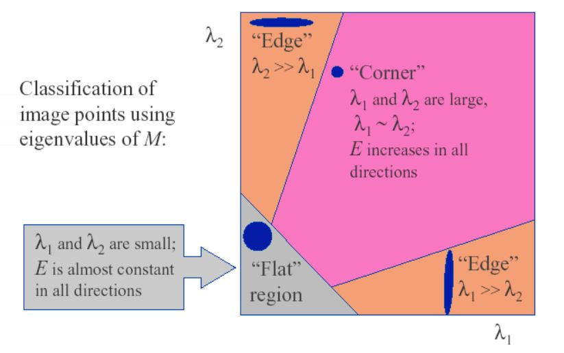

1. Introduction
The Harris corner detector is a type of feature detector that can be used by other feature-based matching algorithms.
A good feature should be distinctive compared with its surrounding area. Therefore, shifting the window in any direction should yield a large change in appearance.
- "flat" region: no change in all directions.
- "edge" region: no change along the edge direction.
- "corner" region: significant change in all directions.

Change of intensity for the shift \([u, v]\) can be formulated by below enery function.
\[E(v, v) = \sum_{x, y}^{}w(x, y)[I(x + u, y + v) - I(x, y)]^2 \tag{1}\]
\(w(x, y)\) is the window function, \(I(x + u, y + v)\) is the shifted intensity, and \(I(x, y)\) is the original intensity
For nearly constant patches, this will be near 0.
For very distinctive patches, this will be larger. So a corner can be detected at a patch having a large value of \(E(u, v)\)
Taylor series expansion can be used for 2D functions to first order
\[f(x + u, y + v)=f(x, y) + uf_{x}^{'}(x, y) + vf_{y}^{'}(x, y)\]
Hence, \[\sum_{x, y}[I(x + u, y + v) - I(x, y)]^2\approx\sum_{x, y}[I(x, y) + uI_x + vI_y - I(x, y)]^2 =\sum_{x, y}(u^2I_{x}^2 + 2uvI_{x}I_{y} + v^2I_{y}^2) =\sum_{x, y}\left[\begin{array}{}u & v\end{array}\right]\left[\begin{array}{}I_{x}^2 & I_{x}I_{y}\\ I_{x}I_{y} & I_{y}^2\\\end{array}\right]\left[\begin{array}{}u\\v\end{array}\right] =\left[\begin{array}{}u & v\end{array}\right]\sum_{x, y}\left[\begin{array}{}I_{x}^2 & I_{x}I_{y}\\ I_{x}I_{y} & I_{y}^2\\\end{array}\right]\left[\begin{array}{}u\\v\end{array}\right] \tag{2}\]
From \((1)\) and \((2)\), \[E(u, v)\approx\left[\begin{array}{}u & v\end{array}\right]\ M \left[\begin{array}{}u\\v\end{array}\right]\]
\[M=\sum_{x, y}w(x,y)\left[\begin{array}{}I_{x}^2 & I_{x}I_{y}\\ I_{x}I_{y} & I_{y}^2\\\end{array}\right]\]
Window function \(w(x,y)\) can be 1 for simple case.
By analyzing the eigen values of matrix \(M\), we know that \(E(u, v)\) increases in all directions when \(\lambda_1\) and \(\lambda_2\) are large.
Instead of calculating and thresholding on each single eigen value, we can measure the responding map of the corner by using one of the below methods
-
Harris & Stephens (1988): \(R=\det(M) - k\operatorname{trace}(M)^2, k = 0.04-0.06\)
-
Kanade & Tomasi (1994): \(R=min(\lambda_{1}, \lambda_{2})\)
-
Nobel (1998): \(R=\frac{det(M)}{trace(M) + \epsilon}\)
2. Experiment
Below is demo video by XImageTool
In order to improve the result, a Non-Maximal Suppression with size 3x3 can be applied to filter locally weak corners on the map image.
3. References